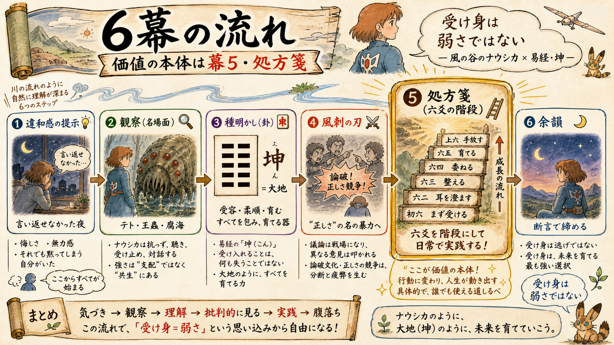
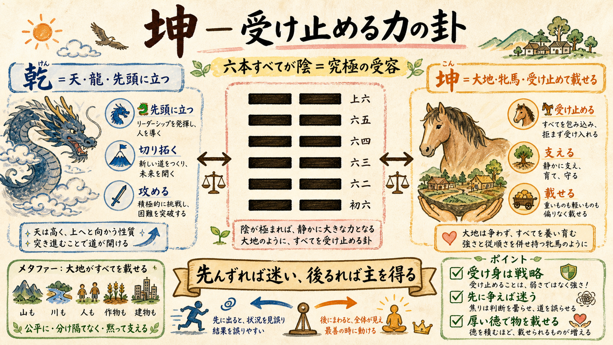

content/056・公開枠 2026-07-15（水）朝4:00 JST（スロット取得済み）。topic-radar 未使用卦の最上位候補です。Step 0 の PDCA 判定と新仮説 H46 を添えて承認をお願いします。タイトルはルール通り台本確定後（Step 8.5）に決めます。
2026-07-03 10:19 実測スナップショット（yt-stats.mjs）と検証中仮説の照合。
| 実測 | 値 | 読み |
|---|---|---|
| 登録 / 総再生 | 68（+2/日）/ 44,988（+2,891/日） | ショートが再生の主エンジン（変わらず） |
| 鋼の錬金術師ショート | 1,153再生@216.6/h・1,699@118.7/h | H39「既知キャラ×未知の驚き」フックが効いている傍証 |
| ジブリ系ショート | 千と千尋 1,598 / 1,277 | ジブリIPの認知度はこのchで実測済みの強さ（H2系） |
| 検証中仮説（H40/H41ほか） | 判定日未達 | 対象epが予約公開待ち → 1日データで動かさない（本人ルール） |
今回の企画に反映した学び（どの仮説をどう反映したか）:
一行コンセプト：戦わないナウシカが、巨神兵で焼き払うクシャナより遠くへ行けたのはなぜか — 「受け身」を弱さでなく最強の戦略として読み直す回。

| 幕 | 内容 | 尺 |
|---|---|---|
| 1. 違和感の提示 | 「言い返せなかった帰り道、自分を弱いと責めたことはないでしょうか」— 受け身＝弱さ、という常識への違和感。卦名teaser（坤） | 30秒 |
| 2. 観察 | ナウシカの名場面を固有名で積む：①テトに指を噛ませて「ほら、怖くない」②王蟲の暴走に武器でなく身を差し出す ③毒の森と恐れられた腐海が、実は大地を浄化していた — 「受け止める側」が世界を治していた構造。対比＝クシャナ（巨神兵で焼き払う→蟲の大群を呼ぶ） | 3-5分 |
| 3. 種明かし | 坤＝六本すべて陰・大地の卦（GUA6六爻図）。乾（ep02・夜神月）の正反対。「先んずれば迷い、後るれば主を得る」・牝馬の貞 | 2-3分 |
| 4. 風刺の刃 | 即レス・論破文化。黙って受け止める人が「言い返せない人」として下に見られる社会の空気と、そう見てしまう自分自身へ | 30秒-1分 |
| 5. 処方箋（価値の本体） | 坤の六爻＋象辞「厚徳載物」を"受け止め方の階段"として設計（§03参照）。各段をナウシカ/クシャナの選択に着地 | 1.5-3分 |
| 6. 余韻 | 断言で締める（定型の問いかけ禁止） | 30秒 |
比較作品: ①クシャナ（作内対比＝力で焼き払う出口）②エレン・イェーガー（ep06「革」＝力で世界を変える出口・シリーズ内クロス参照で回遊導線）
fact_check は Step 2 で一次確認: 上記の作中事実（テト・王蟲・腐海の設定）は台本段階で ja.wikipedia / 公式で全数照合し content/056/fact_check.md に記録してから進めます（L9再発防止・記憶を一次ソースにしない）。
坤（こん・kw#2）＝六爻すべて陰の純粋な受容。乾と対をなす易経の二大根本卦。ナウシカの「抗わずに受け止めて、いちばん遠くまで行く」構造と一致。

処方箋＝六爻の階段（骨子案） — 正確な爻辞文言は Step 2 で db/hexagrams.json から引き直します（記憶で書かない・深掘り必須ルール）:
| 爻 | 爻辞（骨子） | 受け止め方の段階 | 作品への着地 |
|---|---|---|---|
| 初六 | 霜を履んで堅氷至る | 小さな兆しを受け取る感度 — 受容は鈍感ではなく察知から始まる | 腐海の胞子ひとつから森の異変を読むナウシカ |
| 六二 | 直・方・大 | まっすぐで在れば、技巧なしで通る | 蟲に対して策でなく素手で向き合う |
| 六三 | 章を含みて貞にすべし | 才能を誇示せず内に抱える | 風使いの腕を誇らない |
| 六四 | 嚢を括る | 語らない局面の見極め — 沈黙は逃げではなく判断 | 怒りを飲み込む場面 |
| 六五 | 黄裳、元吉 | 中庸の受容が最高の吉 — 受け身の完成形は「支える側の中心」になること | 民が自然とナウシカに従う構造 |
| 上六 | 龍、野に戦う | 受容が極まって争えば共倒れ — 受け身にも限界線がある（怒りの発露＝ナウシカも一度剣を取った） | 父を殺された直後の激昂 |
象辞「地勢坤、君子以て厚徳もて物を載す」＝受け流すのではなく「載せる」。我慢（消耗）と受容（器）の違いが本編の背骨になります。
topic-radar 上位のうち未使用卦×未使用作品でフィルタした代替。radar 1位のコードギアス（87.2）は卦＝革が ep06 で使用済みのため今回は見送り（別卦での再マッピングは将来検討）。
| 候補 | radar | 卦 | life_moment |
|---|---|---|---|
| 風の谷のナウシカ（推奨） | 59.4 | 坤 | 抗うより受け止める人が、いちばん遠くまで進む |
| BLEACH（黒崎一護） | 58.0 | 震 | 突然すべてが崩れた時、最初に動けた人が後を分ける |
| ジョジョの奇妙な冒険 | 54.9 | 同人 | 本当の仲間は、得じゃなく志でつながる |
| Re:ゼロから始める異世界生活 | 54.2 | 小過 | 一発逆転より、小さくやり直す方が確かに進む |
新仮説 H46（採番済み・056）: 「受け身＝弱さ」の常識を反転する強い受容フレームのフックは、自己投影コメント（「これ、私だ」系）と保存率を上げる。判定基準: 公開後72h-7dで ep36 関連ショート/本編のコメント率・保存率が ep29-35 コホート中央値を上回れば規則化候補へ。単発断定はしない。
承認いただきたい3点:
essay.sh 登録（ep36/056/坤）→ Step 2 台本へ（fact_check 全数照合＋preflight PASS＋creative-loop fork採点≧90 を経て台本レビューで再度お見せします）